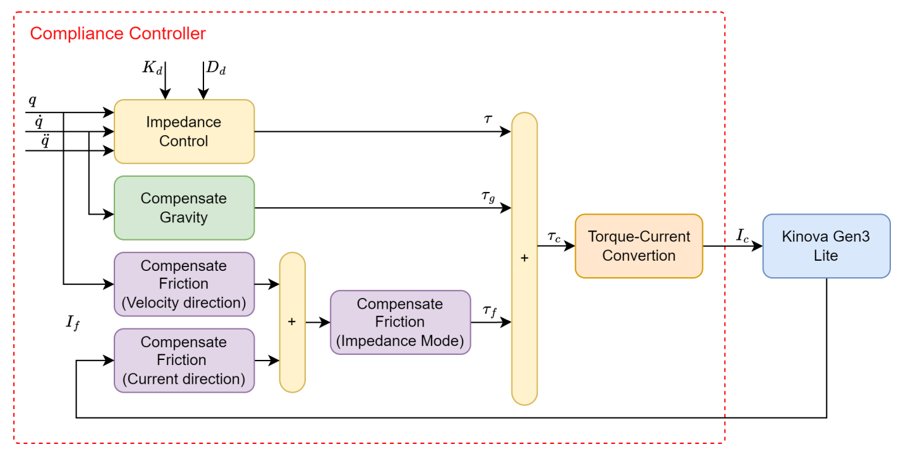

Adaptive Compliance
Control Framework.
An attention-based approach to impedance gain scheduling, enabling safe and precise robotic interaction in complex industrial assembly tasks.

03. Mathematical Formulation
Translational Impedance Control
The translational component regulates the force $f$ by decoupling the task-space kinetic energy matrix. The feed-forward "+" part handles the non-linear dynamics of the Kinova arm, while the PD-part ensures tracking error $e$ converges to zero.
Optimized for 1kHz loop frequency on Ubuntu 22.04 LTS.
Rotational Impedance Control
Rotational subspace control generates torque $\tau$ relative to orientation error $e_o$. This is critical for maintaining end-effector alignment during contact-rich industrial assembly phases.
Decoupled 6-DoF orientation regulation for Kinova Gen3 Lite.
Execution & Validation
Real-world validation on Kinova Gen3 Lite arms.
Implementation Details
Real-Time Dynamics (Pinocchio)
Recursive Newton-Euler Algorithm (RNEA) running at 1kHz to ensure high-bandwidth responsiveness to interaction forces.